Coding集成Jenkins流水账。
本文有以下假设和要求：
- 你的项目源代码的根目录已经存在Jenkinsfile
- 你的项目是一个Maven项目
- 你的Jenkins能够从公网访问
本文参考自官方文档使用Jenkins构建Coding项目
【Jenkins】新建文件夹
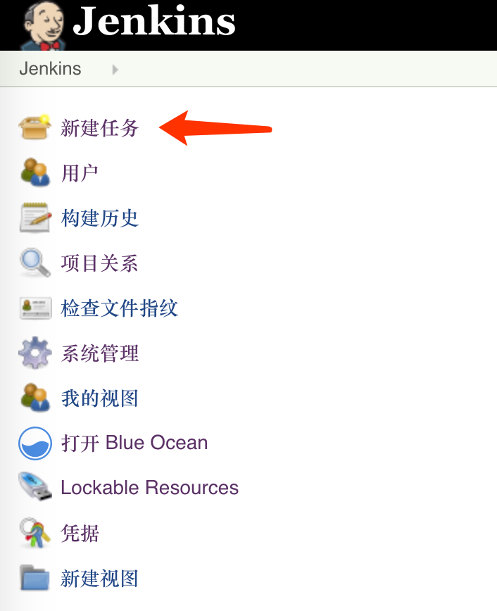 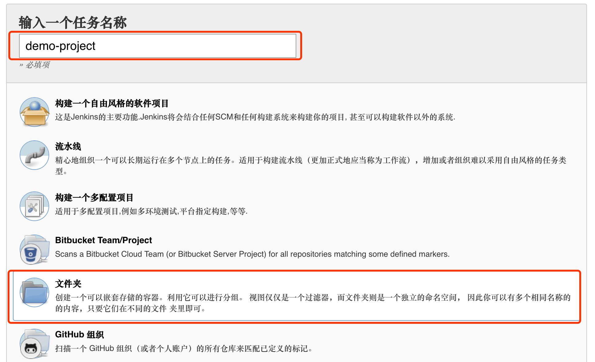 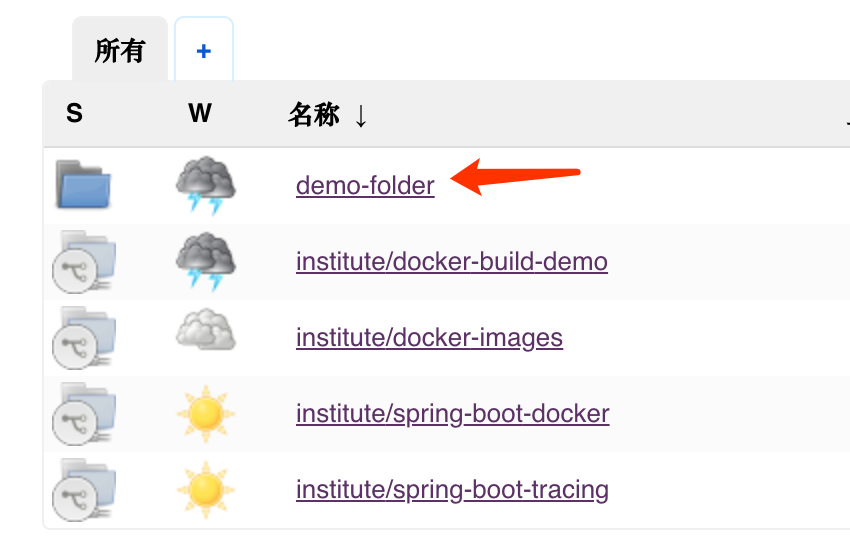【Jenkins】配置SSH key pair
运行下列命令生成SSH key pair，生成两个文件deploykey和deploykey.pub：
1ssh-keygen -f deploykey
进入刚刚创建的文件夹，按下图添加SSH Username with private key凭据：
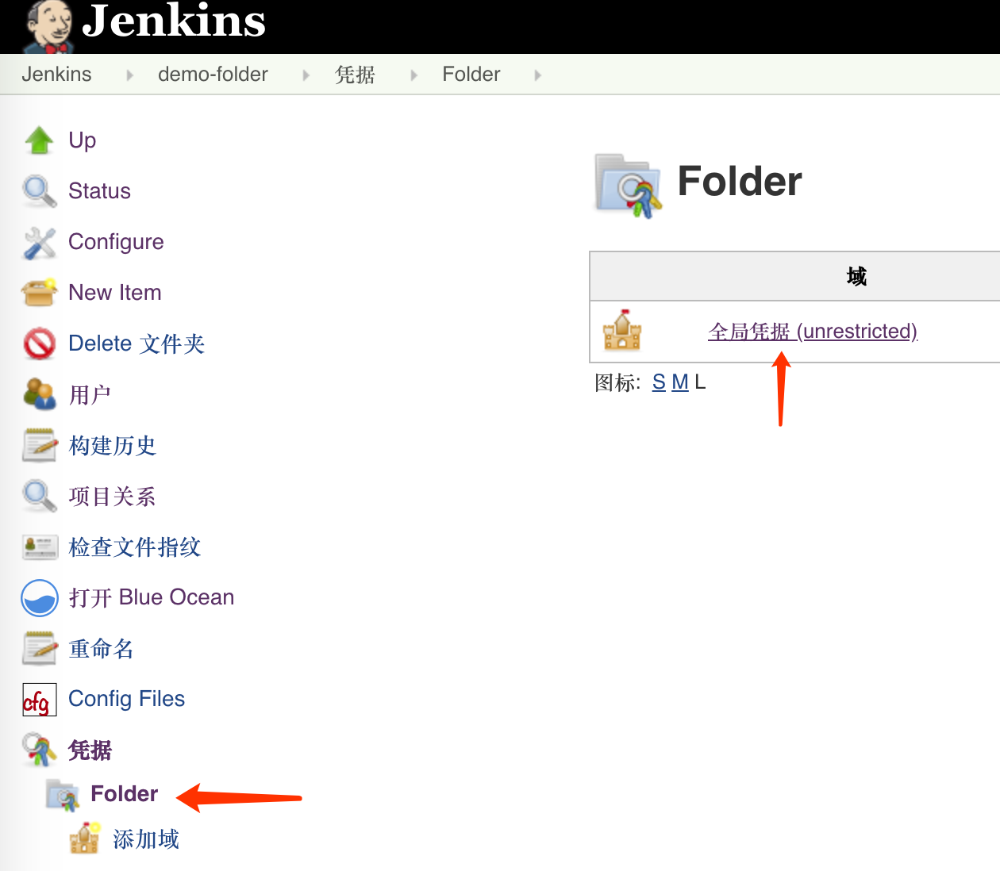 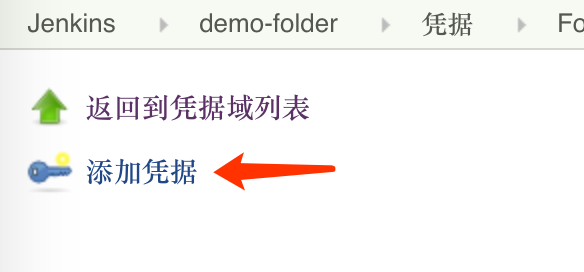把deploykey的内容贴到下面这个页面里：
把deploykey.pub的内容贴到Coding项目的部署公钥里：
【Jenkins】配置Maven settings.xml
根据创建Jenkins Pipeline流水账 - 配置Maven settings.xml 操作
【Coding】创建个人访问令牌
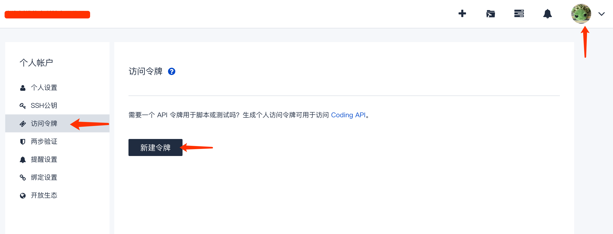 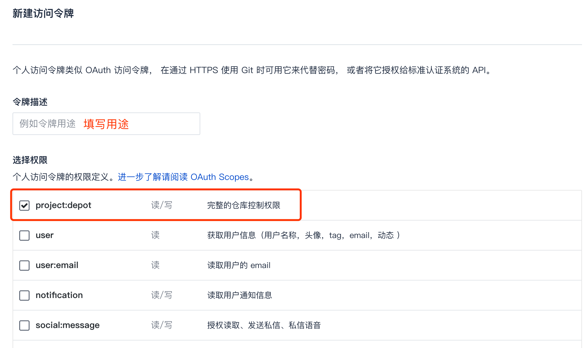把令牌复制下来，注意这个页面是你能够复制令牌的唯一一次机会，如果把这个页面关了，那只能重新创建令牌了：
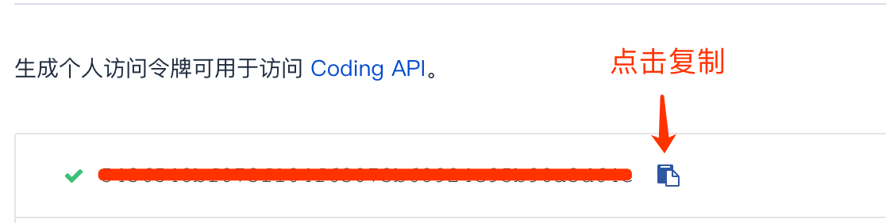【Jenkins】新建流水线
到刚才创建的文件夹里创建流水线：
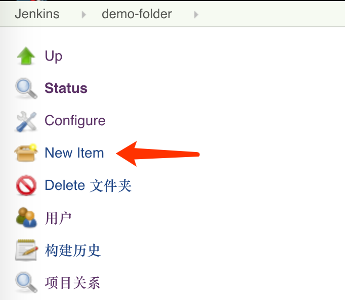 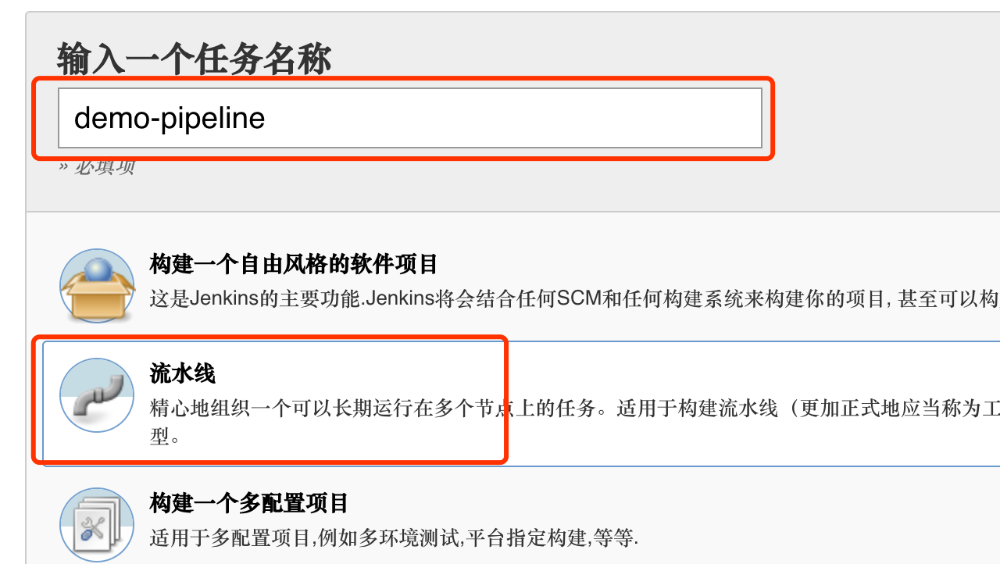做这么几件事情：
- 把Webhook地址复制下来
- 设置Webhook令牌，这个相当于密码，你自己随便输。
- 把之前创建的个人访问令牌贴到【访问令牌】输入框。
- 然后按照下图方式配置。
点击下图所示问号能看到以下帮助文档，注意我们是私有项目看红框内容：
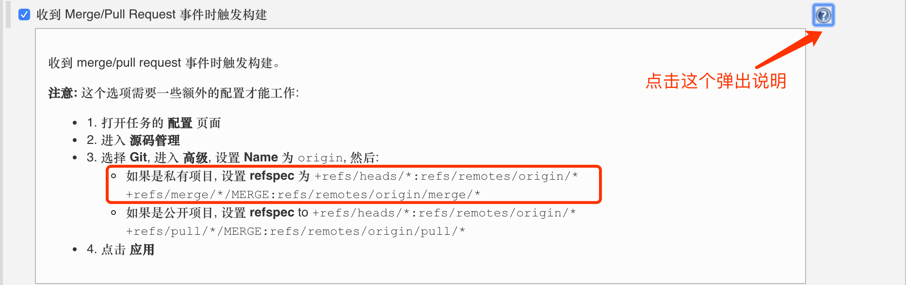在Pipeline部分配置仓库：
- Credential使用之前创建的SSH key
- Name和Refspec是根据前面帮助文档里要求的填写的
在Branches to build里添加两项：
refs/remotes/origin/*refs/remotes/origin/merge/*
其实这两个值是帮助文档里提到的而来，注意两个refspec里冒号后面的部分：
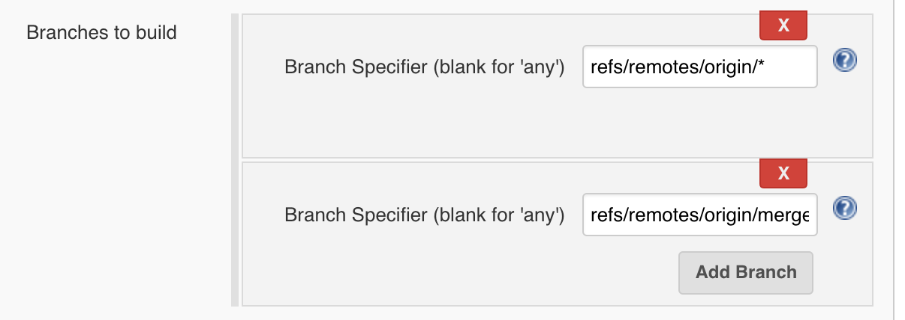如果是私有项目, 设置 refspec 为
+refs/heads/*:refs/remotes/origin/* +refs/merge/*/MERGE:refs/remotes/origin/merge/*
添加两个Additional Behaviours：
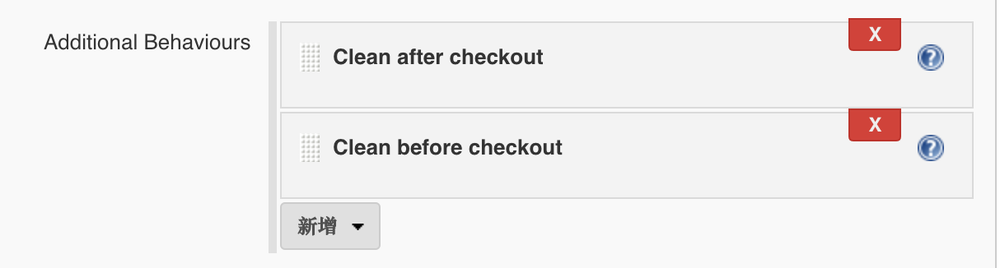去掉Lightweight checkout的勾：
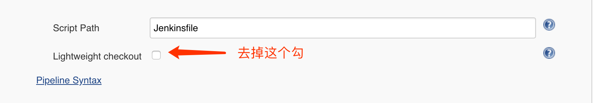在Pipeline Maven Configuration部分选择刚才创建的Maven settings.xml：
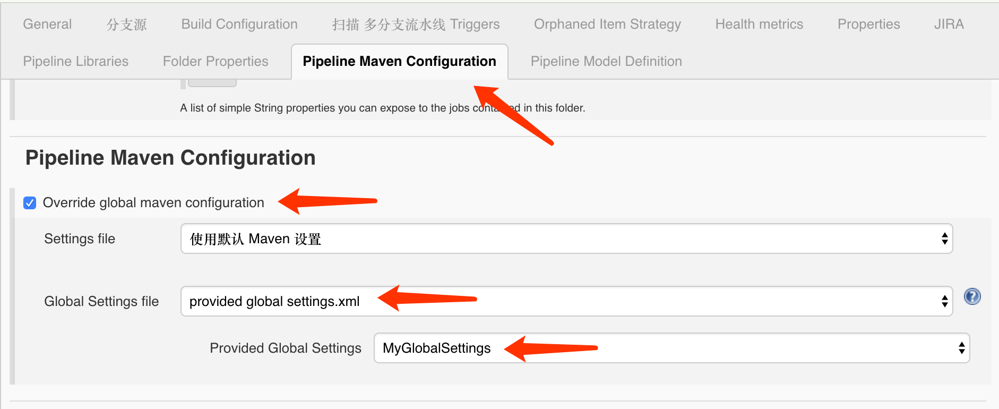【Coding】配置Webhook
到项目的 设置 -> WebHook 页面，添加Webhook：
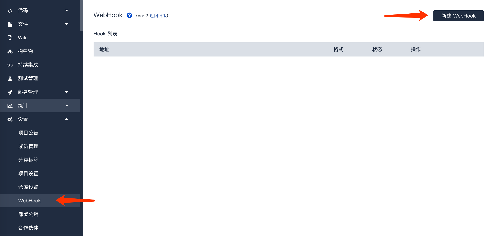按下图配置：
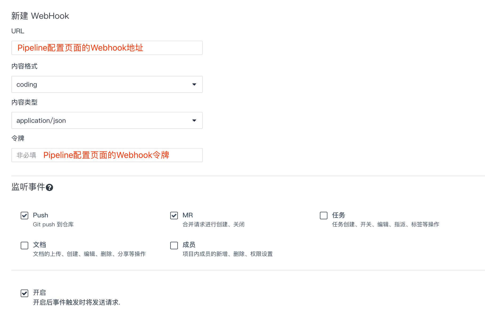效果
至此大功告成。
你可以通过提交commit的方式触发Jenkins构建，然后可以在项目的这个页面看到构建结果：
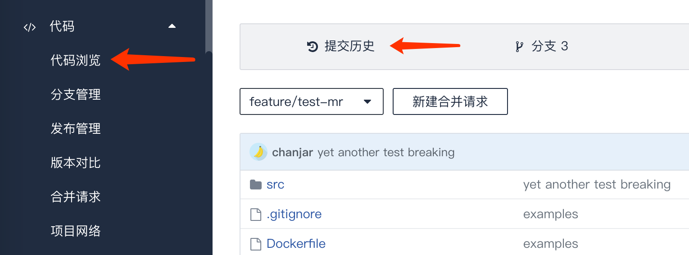 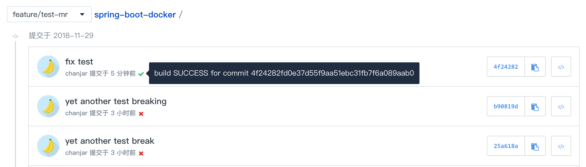你也可以创建合并请求，Coding会触发Jenkins构建并且把构建结果添加到合并请求里：
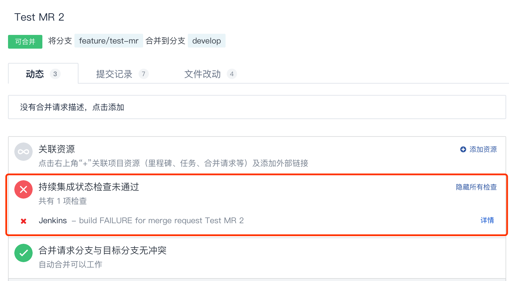
评论